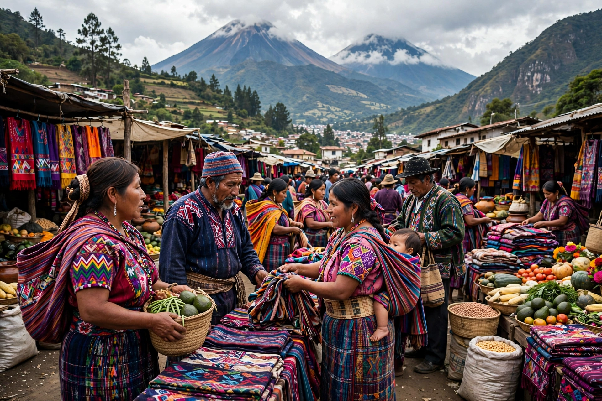

The Kʼicheʼ (also Quiché) are a Maya people of the midwestern highlands of Guatemala and the largest Indigenous group in the country. Their language, Kʼicheʼ, has over a million speakers.
The Kʼicheʼ kingdom of Qʼumarkaj expanded in the 15th century under rulers such as Quq'kumatz and K'iq'ab'. In 1524 Pedro de Alvarado defeated the Kʼicheʼ under Tecun Uman and burned Qʼumarkaj, beginning Spanish conquest.
The Kʼicheʼ are famous for the Popol Vuh, the great Maya creation epic and dynastic history, transcribed in Kʼicheʼ in Latin letters in the 1550s and preserved through a copy by Francisco Ximénez.
Kʼicheʼ communities suffered severely in Guatemala's civil war (1960–1996). Nobel laureate Rigoberta Menchú is Kʼicheʼ. See Maya peoples.